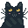

<!-- Basic info -->
<!DOCTYPE html>
<html lang="en"></html>

<html id="CSSVars" class="Sunrise">
   <head>
    <!-- Link stylesheets -->
    <link rel='stylesheet' href='https://cdn-uicons.flaticon.com/3.0.0/uicons-regular-rounded/css/uicons-regular-rounded.css'>
    <link rel="stylesheet" href="style.css">

    <!-- Define stuff -->
    <meta charset="UTF-8">
    <meta name="viewport" content="width=device-width, initial-scale=1.0"> 
    <link rel="icon" type="image/x-icon" href="/img/favicon.ico">
    
    <title>Budc's Website</title>
    <meta name="description" content="The personal website of Budc">
    <meta name="author" content="Bud">

    <meta property="og:title" content="Budc's Website">
    <meta property="og:type" content="website">
    <meta property="og:url" content="https://budc.uk/">
    <meta property="og:image" content="https://budc.uk/img/home/catPfpFrame.png">
    <meta property="og:description" content="The personal website of Budc, with tools, games, music, and any other of my creations">
  </head>

  <body>

    <div id="portrait-warning">
      <p>Currently, this site is only designed for landscape viewing.</p>
      <p>Portrait compatibility might be added in the near future.</p>
    </div>
    <div class="wrapper">
      
      <iframe src="home.html" frameborder="0" class="content" name="content" id="content"></iframe>
        <div style="width: 80vw; height: 5vh; margin-left: 10vw;"><nav>

          <ul> <!-- Please for the love of god have mercy on my soul this navbar is nothing but jank -->
            <li><a href="home.html" target="content" class="navLink active" onclick="navClick(0)"><span class="navText">Home </span><i id="navIco" class="fi fi-rr-home"></i></a></li>
            <li><a href="404.html" target="content" class="navLink" id="grey" onclick="navClick(1)"><span class="navText" >Tools/Games </span><i id="navIco" class="fi fi-rr-console-controller"></i></a></li>
            <li><a href="404.html" target="content" class="navLink" id="grey" onclick="navClick(2)"><span class="navText">Music & Art </span><i id="navIco" class="fi fi-rr-piano-keyboard"></i></a></li>
            <li><a href="404.html" target="content" class="navLink" id="grey" onclick="navClick(3)"><span class="navText">Modding/Dev </span><i id="navIco" class="fi fi-rr-square-terminal"></i></a></li>
            <li><a href="404.html" target="content" class="navLink" id="grey" onclick="navClick(4)"><span class="navText">Pictures/Photos </span><i id="navIco" class="fi fi-rr-picture"></i></a></li>
            <li><a href="404.html" target="content" class="navLink" id="grey" onclick="navClick(5)"><span class="navText">Other Stuff </span><i id="navIco" class="fi fi-rr-folder-open"></i></a></li>
            <li><a href="contact.html" target="content" class="navLink" onclick="navClick(6)"><span class="navText"> Links/Info </span><i id="navIco" class="fi fi-rr-envelope"></i></a></li>

            <li><a onclick="changeBg()"><span class="navText"></span><i id="bgIco" class="fi fi-rr-sunrise-alt" style="font-size: 1.5em; position: fixed ; right: 0; top: 0; padding: 0; padding-right: 10.83vw; padding-top: 0.95vw;"></i></a></li>
          </ul> 

        </nav></div>

        <div style="position: absolute; width: auto; height: 10vh; margin-top: 85vh; "><footer>
          <span style="bottom: 0; position: fixed; margin-left: 0.2vw; margin-bottom: 0.2vw; width: auto;">
            Uicons by <a href="https://www.flaticon.com/uicons" target="_blank">Flaticon</a> <br>
            Hosted on <a href="https://github.com/budc123/budc123.github.io" target="_blank">Github Pages</a>
          </span>
          <span style="bottom: 0; position: fixed; margin-left: 12vw; margin-bottom: 0.2vw; width: auto;">
            This website was made completely by hand (aside from some boilerplate snippets) <br>
            All art (unless stated otherwise) was made by me and is completely free to use
          </span>
        </footer></div>

        <div style="position: absolute; width: 5vw; height: 5vw; bottom: 0; right: 0;">
          
        </div>
      </section>
    </div>
  </body> 
</html>


<script src="indexScripts.js"></script>
<script src="commonScripts.js"></script>
<script src="cat.js"></script> 